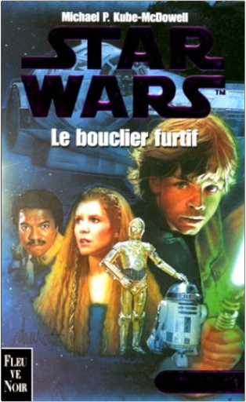

 star wars, tome 5 : la crise de la flotte noire, partie 2, le bouclier furtifmichael p. kube mcdowell  2265067261 |  If any comic has a claim to have truly reinvigorated the genre then The Dark Knight Returns by Frank Miller—known recently for his excellent Sin City series and, previously, for his superb rendering of the blind superhero Daredevil—is probably the supreme contender. Batman represented all that was wrong in comics and Miller set himself a tough task taking on the camp crusader and turning this laughable, innocuous children's cartoon character into a hero for our times. In his introduction the great Alan Moore (V for Vendetta, Swamp Thing, the arguably peerless Watchmen) argues that only someone of Miller's stature could have done this. Batman is a character known well beyond the confines of the comic world (as are his retinue) and so reinventing him, while keeping his limiting core essentials intact, was a huge task. |

Julien
Collection Total:
1 866 Items
1 866 Items
Last Updated:
Feb 24, 2021
Feb 24, 2021


 Made with Delicious Library
Made with Delicious Library